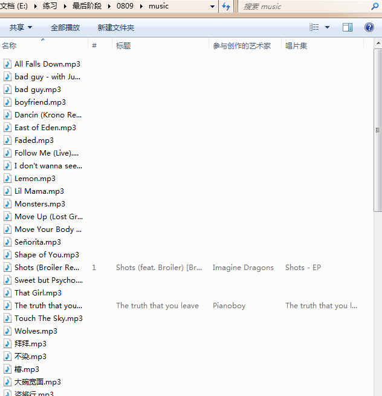

用到的工具，外链转换工具
网易云网站直接打开源代码里面并没有对应的歌曲信息，需要对url做处理，
查看网站源代码路径；发现把里面的#号去掉会显示所有内容，
右键打开的源代码路径：view-source:https://music.163.com/#/discover/toplist?id=3778678
去掉#号后：view-source:https://music.163.com/discover/toplist?id=3778678资源拿到了，开始写代码；
import requests
from lxml import etree
import os
from multiprocessing import Pool
headers = {
'User-Agent': 'Mozilla/5.0 (Windows NT 6.1; WOW64) AppleWebKit/537.36 (KHTML, like Gecko) Chrome/65.0.3325.181 Safari/537.36'
}
# 创建存储路径
pathname = './music/'
if not os.path.exists(pathname):
os.mkdir(pathname)
# 获取歌曲链接的函数
def get_urls(url):
try:
response = requests.get(url=url,headers=headers)
music = etree.HTML(response.text)
music_urls = music.xpath('//ul[@class="f-hide"]/li')
musiclist=[]
for music_url in music_urls:
url = music_url.xpath('./a/@href')[0]
name = music_url.xpath('./a/text()')[0]
musiclist.append({'key':name,'url':'https://link.hhtjim.com/163/'+url.split('=')[-1]+'.mp3'})
# 多进程启动爬取
pool.map(get_music,musiclist)
except Exception:
print('get_urls failed')
# 下载歌曲的函数
def get_music(url):
try:
# 判断歌曲是否已下载，避免网络问题导致重新爬取
if os.path.exists(pathname+url['key']+'.mp3'):
print('歌曲已存在')
else:
response = requests.get(url=url['url'],headers=headers)
with open(pathname+url['key']+'.mp3','wb') as f:
f.write(response.content)
print('正在下载：'+url['key'],url['url'])
except Exception:
print('get_music failed')
if __name__ == '__main__':
# 爬取的url的源代码路径
url = 'https://music.163.com/discover/toplist?id=3778678'
# 开启进程池
pool = Pool()
get_urls(url)代码中获取歌曲链接是拼接的路由要用到音乐外链工具，
控制台输出；
正在下载：那个女孩 https://link.hhtjim.com/163/1300994613.mp3
正在下载：Lemon https://link.hhtjim.com/163/536622304.mp3
正在下载：给未来 https://link.hhtjim.com/163/1377131180.mp3
正在下载：四块五 https://link.hhtjim.com/163/1365221826.mp3
正在下载：再也没有 https://link.hhtjim.com/163/480580003.mp3
正在下载：云烟成雨 https://link.hhtjim.com/163/513360721.mp3
正在下载：你是人间四月天 https://link.hhtjim.com/163/1344897943.mp3
正在下载：静悄悄 https://link.hhtjim.com/163/553815178.mp3
正在下载：我的名字 https://link.hhtjim.com/163/554241732.mp3
正在下载：我的一个道姑朋友 https://link.hhtjim.com/163/1367452194.mp3
正在下载：感谢你曾来过 https://link.hhtjim.com/163/460578140.mp3
正在下载：心安理得 https://link.hhtjim.com/163/474739467.mp3
正在下载：烟火里的尘埃 https://link.hhtjim.com/163/29004400.mp3打开文件夹查看是否下载成功；

done。